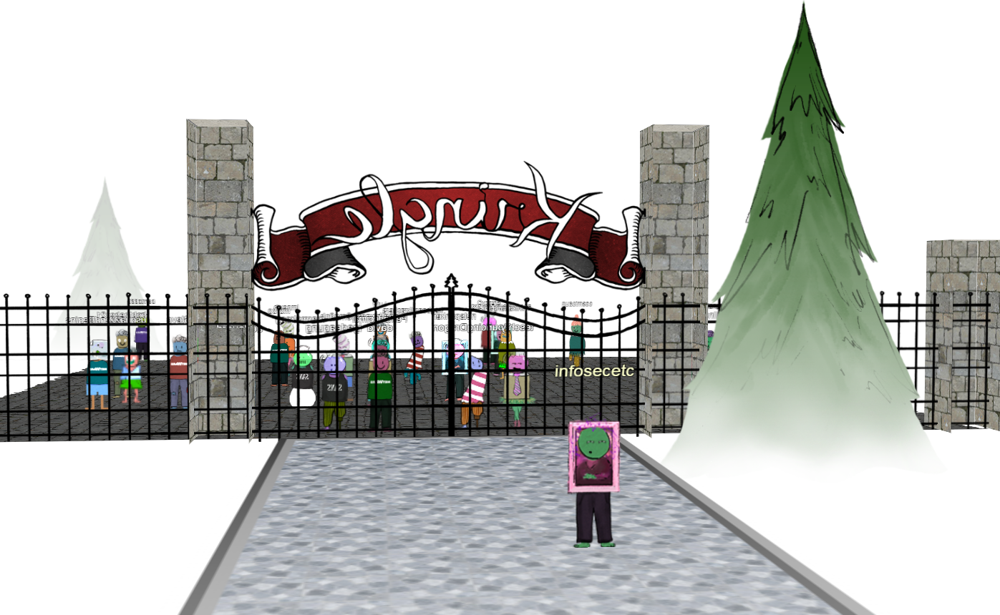

LineCon
Around October, invitations were sent out for the 2018 Holiday Hack Challenge. According to the invitations, attendees were welcome to sign up and explore the virtual world that KringleCon would take place in.
The pre-event period became known as LineCon - the sometimes lengthy queue of attendees outside of a convention waiting for the doors to open. This provided some opportunities to kick the tires on the game envrionment and do a little recon work that could possibly help later.
From: SANS Institute sans@sans.org
Subject: SANS Holiday Hack Challenge Sneak-Peak: Register Now for the Fun and Adventure
Greetings, Holiday Hackers!
It's time to return to the North Pole for a very special event: KringleCon 2018. This year the makers of the SANS Holiday Hack Challenge, NetWars, and SANS Pen Test training courses invite you to a place of wonder, destiny, and hacking magic!
Register now at www.kringlecon.com and create your avatar for KringleCon!
What is KringleCon? It is a virtual holiday hacking event that will be hosted by Santa and his team at the North Pole in mid-December 2018. Security-minded people and hackers from around the world will come together virtually to help improve the state of cybersecurity worldwide and protect the holidays from dastardly cyber attackers.
Registration is completely FREE, but space is limited for this very special event!
Why register now when it's not even December? Well now, that's kind of a surprise, and we wouldn't want to ruin it for you…
You can even poke around the KringleCon website and look for a little special magic in this sneak-peak preview.
Welcome back to the fun and adventure of the SANS Holiday Hack Challenge!!!
REGISTER NOW at www.kringlecon.com to secure your place!
Curiosity
If you signed up during LineCon, you might have noticed the the registration pages on the KringleCon website incremented in name: two, three, four. I wondered what would happen if I browsed to the next couple pages in logical sequence, and was greeted with a message that said "You're curious. We like that!"
WebSockets
Browsing to kringlecon.com through a web interception proxy, I quickly discovered that client-server communication takes place over WebSockets. A few players took advantage of this open standard to develop bots that could chat with or follow other players around. Besides watching the traffic go back and forth to learn more about what's happening under the hood, the OWASP ZAP proxy also gave me the ability to inject my own messages to either the server or the client. This didn't amount to much aside from moving avatars around on the screen.
DNA
Each avatar's appearance, the specific combination of head, eyes, mouth, torso, legs and coloration, is encoded in a string that resembles a DNA sequence. The game client reads these sequences from the server so that it knows how to display each player's avatar. Sending an invalid DNA string to the server results in your avatar being set to a random sequence of DNA. Sending an invalid DNA string to the client results in your avatar being changed to MissingNo (see Easter Eggs).
DOM manipulation
Since so much of the game is run client-side, the world around us is open to manipulation.
Many selfies were posted to social media during LineCon, demonstrating what players were able to do. Some very skillful players were able to rearrange massive numbers of avatars in various formations. My skills pale in comparison, but I was able to alter the world enough to capture this shot from the other side of the gates:

Using my browser's developer tools, I observed that the camera angle and object orientation in the virtual world are defined by CSS properties. Each set of grid coordinates has a pre-defined set of values that tell the client how to position your avatar and camera view. Once I figured out how to reference these elements, I was able to set my own style properties to override the game's pre-defined settings.
document.getElementsByClassName('camera').item(0).style.transform='rotateX(-3deg) rotateY(185deg) rotateZ(0deg) translate3d(-791.667px, 128px, -500px)' document.getElementsByClassName('me').item(0).style.transform='scale(-1,1) translate3d(-1000px, 0px, -800px)'
Another popular trick during LineCon was to make the gate disappear, but of course this was just a visual trick and didn't allow anyone to cross the threshold.
document.getElementsByClassName('gate-section center')[0].style.visibility='hidden';
Domain recon
While waiting around for KringleCon to begin, I also checked to see if any additional domains had been registered for this year's event. Based on the WHOIS data for kringlecon.com, I performed a reverse WHOIS search, and discovered several domains were created in 2018 with the same Registrant name "Counter Hack".
| Domain Name | Creation Date | Registrar |
|---|---|---|
| kinglecon.com | 2018-05-25 | GODADDY.COM, LLC |
| erohetfanu.com | 2018-10-16 | GODADDY.COM, LLC |
| kringlecastle.com | 2018-10-12 | GODADDY.COM, LLC |